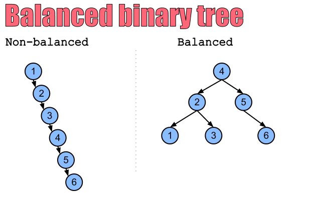
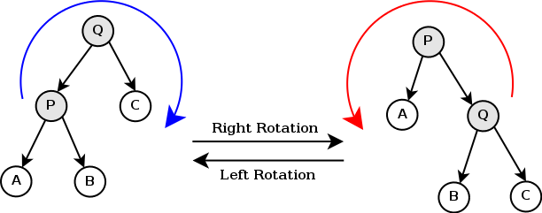
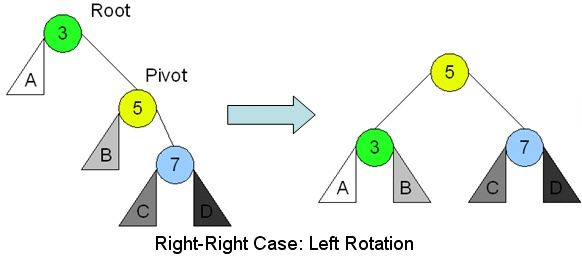
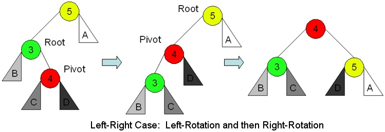
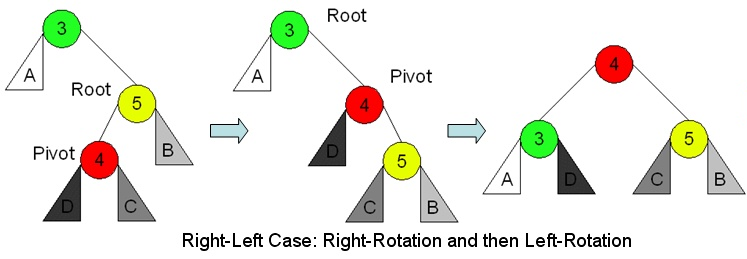
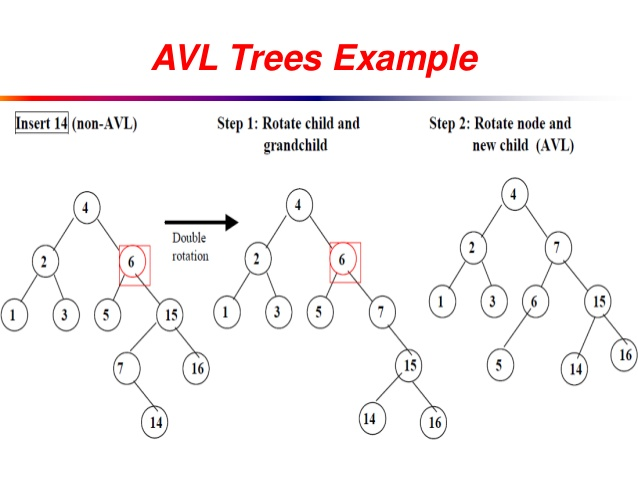

Balanced and unbalanced trees. Source: helloacm.com
Self-balancing trees
The runtime of search, insert, and delete is proportional to the height of the tree. If we insert keys randomly, the expected height is O(logn). (proof: Cormen p. 300) In the worst case, the height is O(n), for example if we insert the keys in increasing order.We can use a self-balancing tree to achieve a worst-case height (and worst-case runtime) of O(logn). Two well-known types of self-balancing trees are the AVL tree and the red-black tree.
TreeSet and TreeMap (JCF) are implemented with a red-black tree.
AVL trees

AVL tree. The blue numbers are heights.
Source: Goodrich p. 479
Proof
Let n(h) = the minimum number of nodes in a tree of height h.
This minimal tree has a root and subtrees of heights h-1 and h-2,
where each subtree is also a minimal tree. Therefore,
n(h) = 1 + n(h-1) + n(h-2)
n(h) > n(h-1) + n(h-2)
n(h) > n(h-2) + n(h-2) (because n(h-1) > n(h-2))
n(h) > 2 · n(h-2)
n(h) > 22 · n(h-4) (because n(h-2) > 2n(h-4))
... (repeat)
n(h) > 2(h-1)/2 · n(1) (if h is odd)
n(h) > 2(h-2)/2 · n(2) (if h is even)
n(h) > 2(h-2)/2 (true in both cases)
log(n(h)) > (h-2)/2 (take the log of both sides)
h < 2log(n(h)) + 2 (multiply by 2, then add 2)
h < 2logn + 2 (because n(h) ≤ n)
h = O(logn)
Rotations

Tree rotations. Source: wikipedia.org
Insertion and deletion
We begin with a normal insertion or deletion. From the new/deleted node, we move upward through the tree until we find the first unbalanced node (a node whose subtrees differ in height by more than 1). Let Z be the unbalanced node. Let Y be the child of Z with greater height, and X be the child of Y with greater height. In insertion, all 3 will be ancestors of the new node. In deletion, if Y has 2 children with the same height, choose X such that both directions are the same.We look at the directions from Z to Y to X to determine which case we are in. Then we rebalance the subtree as shown in the images below.
In insertion, we only need to rebalance once. In deletion, rebalancing a subtree may make an ancestor unbalanced, so we may need to rebalance again.




Source: cpp.edu/~ftang

Source: slideshare.net/sandpoonia
Insertion example
When we insert 14, the AVL tree becomes unbalanced. 6 is the first unbalanced node. The directions from 6 to 15 to 7 are right-left. We do a right rotation on the subtree rooted at 15, followed by a left rotation on the subtree rooted at 6.Runtime
The height of the tree is always O(logn), so searching, insertion, and deletion take O(logn) time. Finding the unbalanced node(s) takes O(logn) time. Each rebalancing takes O(1) time. For insertion we only need to do one rebalancing. For deletion, in the worst case we need to do O(logn) rebalancings. Therefore the total time for insertion or deletion is O(logn) (worst-case).AVL tree implementation
Sample codeClass: AVLTreeSet
Interface: Set
- Each node stores its own height. In each insertion and deletion, only the ancestors of the new/deleted node need to update their heights.
- A node's balance factor is the difference between its subtrees' heights. Some AVL tree implementations only store the balance factors and not the heights.